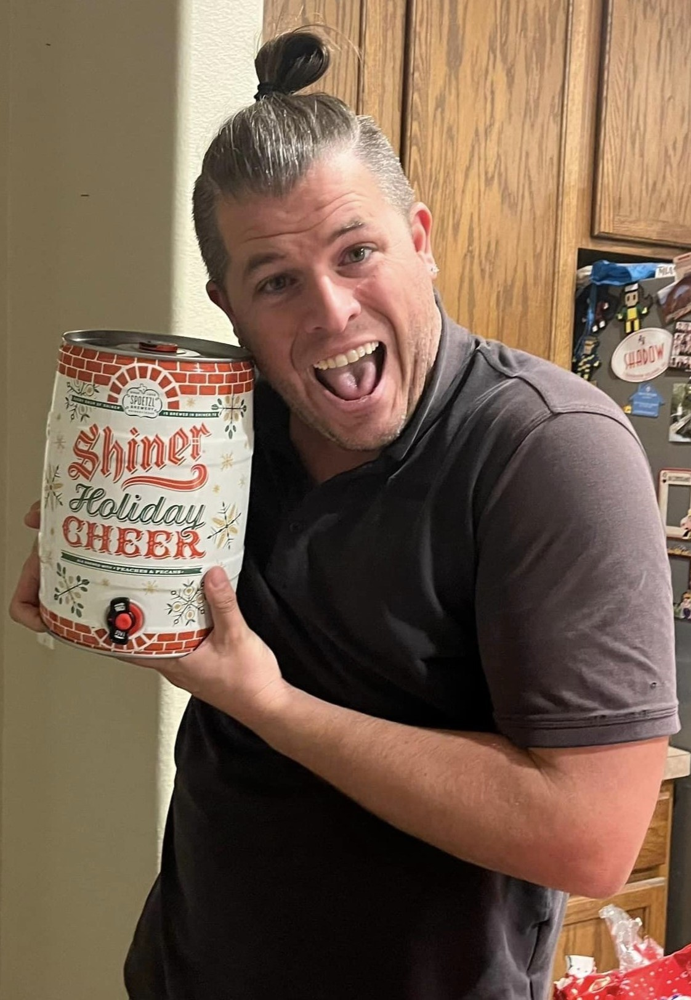

Golfing
Golfing is a great way for Mark to relax and spend the day with friends. He has played on quite a few courses on his travels, and occasionally can be found playing a few rounds of mini golf in the off season.
- Favorite Course: The Plantation Course, Kapalua Hawaii
- Best Game: 99
- Furthest You've Ever Hit A Ball: 300 yards
- Favorite Club: Putter


Fishing
Mark has enjoyed Fishing ever since he was a little kid. It is a favorite thing for him to do with his family while home in Texas, but he also likes to hit the Florida Coast with friends whenever he gets a chance
- Biggest Fish Ever Caught: 40inch Wahoo
- Favorite Fish to Fish For: Shark
- Favorite Place to Go Fishing: Deep Sea ANYWHERE
- Bait of Choice: Shrimp

Vibin'
Mark has a funny way of describing things, and when it comes to his friends, he is always Vibin’! While on the beach, playing golf, or hanging in the theme parks, you can catch Mark laughing it up with his buddies with a drink in his hand and just Vibin’!
- Favorite Vibin' Activity: Beachin'
- Favorite Theme Park Ride: Disney's Haunted Mansion
- Favorite Bar: Miller's Ale House
- Drink of Choice: Shiner Bock Beer


Mark Vibin' with his Shiner Cheer Keg